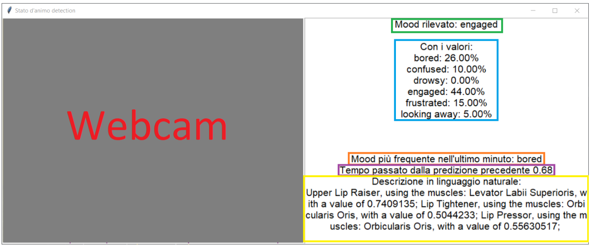

My bachelor thesis consists of an automated system for detecting and analyzing student moods in e-learning environments through facial expression recognition. The research addresses a critical gap in online education: the inability of instructors to gauge student engagement and emotional states in real-time.
Through the use of Action Units (AUs), a facial coding system developed by Paul Ekman, the system identifies subtle facial muscle movements that indicate different emotional states. Unlike traditional emotion recognition systems that focus on basic emotions (happiness, anger, sadness, disgust, fear, neutral), this project specifically targets mood states relevant to learning contexts: engaged, confused, frustrated, bored, drowsy, and looking away.
Developed at Università degli studi di Bari Aldo Moro under the supervision of Prof. Stefano Ferilli and Prof. Berardina De Carolis, the project combines computer vision, machine learning, and real-time processing to create a practical tool for monitoring student engagement during online classes.
This project provided comprehensive experience across multiple domains of artificial intelligence and software engineering. The most significant technical learning came from implementing and comparing five different machine learning algorithms for classification tasks, understanding their strengths, weaknesses, and appropriate use cases.
Working with the Py-Feat library for facial feature extraction taught me about the complexity of facial action coding systems and the computational challenges of real-time video processing. I learned to optimize performance using CUDA acceleration, achieving approximately 100 predictions per minute on GPU-enabled hardware compared to significantly slower CPU-only processing.
Dataset management proved to be one of the most crucial aspects of the project. I learned practical techniques for handling imbalanced datasets through resampling strategies, combining multiple data sources (DAiSEE and Student Engagement datasets), and implementing data cleaning pipelines. The importance of balanced training data became evident when initial models consistently predicted only the majority class.
The project deepened my understanding of evaluation metrics beyond simple accuracy, including precision, recall, balanced accuracy, and k-fold cross-validation. I learned that model selection requires considering multiple factors: performance metrics, computational efficiency, real-time processing requirements, and interpretability.
Integrating the WoMan framework for workflow modeling exposed me to declarative process mining and First-Order Logic representations. Although this approach required significantly more training data than initially anticipated, it provided insights into alternative methodologies for pattern recognition in sequential data.
I also gained experience in building user-facing applications that combine complex backend processing with intuitive interfaces. The real-time mood detection GUI required careful consideration of performance optimization, user feedback mechanisms, and robust error handling.
The thesis represents the end of my bachelor in data science journey, and was a good introduction to the topics I later refined and expanded during my master course.
The system architecture consists of three main components: data acquisition and preprocessing, model training and evaluation, and real-time inference. The data pipeline begins with the Py-Feat library, which extracts 20 Action Units from facial images or video frames. These AUs represent specific facial muscle movements, such as inner brow raiser (AU1), outer brow raiser (AU2), cheek raiser (AU6), and lip corner puller (AU12).

The preprocessing stage involved significant data engineering work. The combined dataset of 74,322 samples from DAiSEE (video-based) and Student Engagement Dataset (image-based) required careful integration. Each video was processed at the frame level, with DAiSEE videos analyzed at approximately 2 frames per second. The initial dataset exhibited severe class imbalance, with 55,707 samples labeled as "engaged" compared to only 240 "drowsy" samples.
To address this imbalance, a resampling strategy was implemented using both undersampling and oversampling techniques. The final balanced dataset contained 2,000 samples per class, achieved through scikit-learn's resample function for oversampling minority classes and custom undersampling for majority classes. This balancing proved critical for model performance, as initial tests showed models predicting almost exclusively the "engaged" class.
Five classification algorithms were implemented and rigorously evaluated: Random Forest, K-Nearest Neighbors (KNN), Support Vector Machine (SVM), Naive Bayes, and Support Vector Regression (SVR). Each model was trained on the same balanced dataset and evaluated using 33-fold cross-validation to ensure robust performance estimates.
The Random Forest classifier emerged as the clear winner with 82.26% accuracy, 81.86% precision, and 82.26% recall. The model used 100 decision trees and leveraged the ensemble learning approach to reduce overfitting. Feature importance analysis revealed that while most Action Units contributed similarly (7-12% importance), AU43 (eyes closed) had significantly higher predictive power, logically indicating states like drowsiness or disengagement. This is very important since it gave insights on the fact that the model behaves in a human sound way, at least for that feature. More about this in my master's thesis.
The K-Nearest Neighbors classifier achieved respectable performance with 77.87% accuracy. Even though the accuracy result is rather high, the number of neighbors was set to n_neighbors=1. Reviewing this result at the end of my master's course I have to specify that this is definitely a mistake I made because I did not know about overfitting and of how exactly classifiers are supposed to work.
Support Vector Machine, Naive Bayes, and SVR performed significantly worse (54%, 39%, and 17% accuracy respectively), highlighting that not all algorithms are equally suitable for this type of facial expression classification task. The poor performance of Naive Bayes likely stemmed from the violation of its independence assumption, as facial Action Units are inherently correlated.
The practical application of my research materialized in a Python-based GUI that performs live mood detection through webcam input. The interface displays the video feed alongside real-time predictions, showing the current detected mood, confidence percentages for all six mood classes, and the most frequent mood over the last minute. 
Performance optimization was critical for real-time operation. Using an AMD Ryzen 7 5800H processor with NVIDIA GeForce RTX 3060 laptop GPU, the system achieved approximately 100 predictions per minute when leveraging CUDA acceleration. Without GPU acceleration, prediction time increased from 0.6-0.7 seconds to 1.6-1.7 seconds per frame, demonstrating the importance of hardware acceleration for real-time facial analysis.
The application implements a sliding window approach for temporal smoothing, tracking predictions over one-minute intervals to identify dominant mood states and reduce the impact of momentary misclassifications. This temporal aggregation improves the reliability of mood assessments for practical educational applications.
The research utilized two primary datasets: DAiSEE (Dataset for Affective States in E-Environments) and the Student Engagement Dataset from Kaggle. DAiSEE provided 9,068 video clips of students in naturalistic e-learning settings, labeled with engagement levels (0-3) across four dimensions: boredom, engagement, confusion, and frustration. The dataset was specifically designed to address "in-the-wild" scenarios with variable lighting, head poses, and occlusions.
The Student Engagement Dataset complemented DAiSEE with static images categorized into six mood states: confused, engaged, frustrated, bored, drowsy, and looking away. While smaller in scale, it provided essential coverage of mood states not fully represented in DAiSEE, particularly drowsy and looking away conditions.
Data extraction from videos required careful frame sampling. Rather than analyzing every frame (which would have been computationally prohibitive), the system extracted frames at the framerate of each video, effectively sampling 1-2 frames per second. For the 50 videos per mood class used in WoMan framework experiments, processing time averaged approximately 3 minutes per video, totaling roughly 36 hours for the full analysis.
The Facial Action Coding System (FACS) provides a comprehensive, objective method for describing facial movements. Rather than subjective emotion labels, FACS decomposes expressions into 20 measurable Action Units, each corresponding to specific muscle activations. For example, AU12 (lip corner puller) activates during smiling, while AU1 and AU2 (inner and outer brow raisers) indicate surprise or fear.
Py-Feat's detection pipeline first identifies faces using RetinaFace, localizes 68 facial landmarks with MobileFaceNet, and then predicts Action Unit activations using an XGBoost classifier trained on multiple facial expression databases including BP4D, DISFA, and CK+. Each AU is represented as a continuous value between 0 and 1, indicating activation intensity.
Beyond Action Units, Py-Feat extracts additional contextual information including face bounding boxes, head pose angles (pitch, roll, yaw), and emotion probabilities for six basic emotions. However, only the 20 Action Units were used as features for the mood classification models, based on literature suggesting AUs provide more reliable indicators of engagement states than basic emotion classifications.
The immediate application target is online education, where instructors could use the system to monitor student engagement during live video classes. Real-time feedback about class-wide attention levels could prompt instructors to adjust teaching pace, clarify confusing material, or introduce breaks when fatigue is detected.
Beyond real-time monitoring, aggregated mood data could provide valuable analytics for course improvement. Analyzing when students become confused or disengaged during recorded lectures could identify content that needs redesign. Correlation with assessment performance could validate whether engagement during lessons predicts learning outcomes.
The system's architecture also suits asynchronous learning scenarios. Students watching pre-recorded content could receive personalized recommendations (take a break, review previous material, seek additional resources) based on detected engagement patterns. Adaptive learning systems could modify content presentation based on real-time mood detection.
This thesis contributes to the growing body of research on affective computing in education by demonstrating that mood states can be reliably detected from facial expressions. The choice to focus on moods rather than emotions represents a practical alignment with real-world educational needs, as students don't typically display extreme emotions during normal learning activities.
The comprehensive comparison of machine learning algorithms for AU-based mood classification provides guidance for future researchers. The finding that Random Forest substantially outperforms other approaches aligns with similar conclusions in related emotion recognition research, reinforcing its position as a preferred algorithm for facial expression analysis.
The integration and balancing of multiple datasets (DAiSEE and Student Engagement) created a more comprehensive training corpus than either dataset alone could provide. The methodology for combining video and image datasets while maintaining label consistency could be replicated for other facial expression recognition tasks.
Finally, the exploration of the WoMan framework for mood workflow modeling, while ultimately constrained by data requirements, identified an interesting avenue for future research with larger datasets or more focused use cases.
Several technical improvements could enhance system performance and applicability. Deep learning approaches, particularly convolutional neural networks trained end-to-end on facial images, might achieve higher accuracy than the current pipeline of separate face detection, AU extraction, and classification stages. However, such models would require substantially more training data and computational resources.
Temporal modeling represents a significant opportunity for improvement. The current system treats each frame independently, ignoring the sequential nature of mood changes. Recurrent neural networks (RNNs) or temporal convolutional networks could model how moods evolve over time, potentially improving accuracy and providing early detection of mood transitions.
Multi-modal integration could substantially boost reliability by incorporating additional signals beyond facial expressions. Voice analysis (prosody, speaking rate), body language (posture, fidgeting), and even mouse movement patterns or typing behavior could provide complementary engagement indicators less susceptible to facial occlusion or deliberate masking.
Deployment of mood monitoring systems in educational settings raises important ethical questions. Privacy concerns are paramount, continuous facial monitoring could feel invasive and might discourage authentic expression if students know they're being constantly assessed. Transparent communication about data usage, storage, and retention policies is essential.
The system should be positioned as a tool to augment, not replace, instructor judgment. Automated mood detection can provide useful indicators, but human interpretation and decision-making remain essential. Instructors should be trained to use the system appropriately and to recognize its limitations.